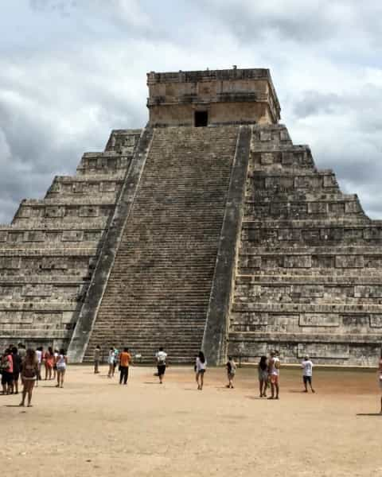

A Cruise to Mexico!
This trip was taken a while back, with a few other families. When we left, although Texas was gloomy and rainy, Mexico offered the perfect summer respite. Being my first cruise, everything was new and interesting, and the endless activities were good at keeping me busy and entertained.
The cruise was for five days, three of which were spent on the ship itself. The two days that we were allowed to explore, we went to Chichen Itza, snorkeling in the ocean side, and enjoyed authentic cuisine.